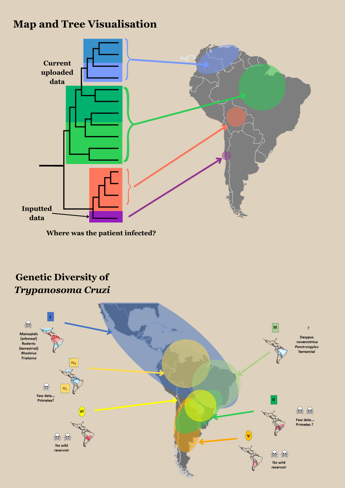

<!DOCTYPE html>
<!--SPANISH VERSION-->
<html>
<head>
    <meta charset="UTF-8"> <!--default character settings-->
    <meta name="viewport" content="width=device-width, initial-scale=1.0"> <!--helps scale the website for phones/tablets/etc.-->
    <title>Chagas Disease Dashboard</title>
    <link rel="stylesheet" href="../style.css">
</head>
<body></body>
    <header>
        <div class="header-content"> 
            <!--image and title link to bring user back to home page-->
            <a href="index-es.html">
                     
            </a>
            <a href="index-es.html" class="link"><h1>ChagaTyper</h1></a>
        </div>  
        <nav>
            <!--navigation links for spanish website-->
            <a href="about-es.html">Acerca de</a> |
            <a href="upload-es.html">Subir datos</a> |
            <a href="visualise-es.html">Visualizar</a> |
            <a href="clinical-es.html">Base de datos clínica</a> 
        </nav>
        <select id="language-selector">
            <option value="es">Español</option>
            <option value="en">English</option>
            <option value="pt">Português</option>
        </select>
    </header>
    <br> <br>
    <section>
        <h1>Visualizar</h1>
        <br>
        <div class="visuals"> 
            <aside>        
              <h3>Diferentes opciones de visualización aquí </h3>
              <h3>Filtros de datos</h3>
              <h3>Personalización y escalabilidad</h3>
            </aside>
            
        </div>
    </section>

    <footer>
    <hr>
    &copy; 2023 University of Glasgow<br>
    Bioinformatics final Project <br>
    ChagaTyper <br>
    Contact: 2707319r@student.gla.ac.uk
    </footer>

    <!--java script code for switching to different languages-->
    <script>
        document.getElementById('language-selector').addEventListener('change', function() {
          var selectedLanguage = this.value;
          var currentPath = window.location.pathname;
          var newPath;
      
          switch (selectedLanguage) {
            case 'en':
              newPath = '../index.html';
              break;
            case 'pt':
              newPath = '../pt/index-pt.html';
              break;
            case 'es':
              newPath = '/es/index-es.html';
              break;
            default:
              newPath = '../index.html';
              break;
          }
      
          window.location.href = newPath;
        });
      </script>

</body>
</html>